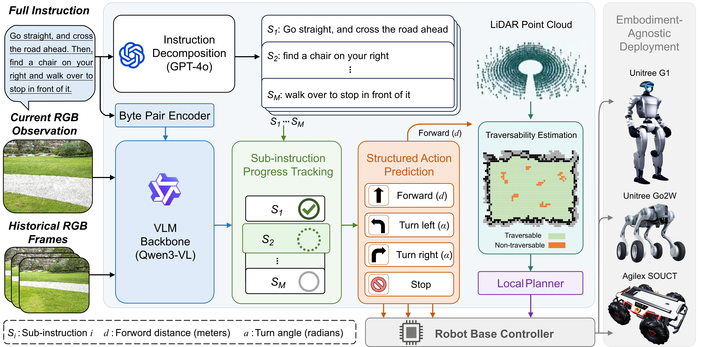

PAPlanner
Progress-Aware Planner for Embodiment-Agnostic \\ Vision-and-Language Navigation
Abstract
Vision-and-Language Navigation in Continuous Environments has achieved remarkable progress with the integration of Vision-Language Models. However, VLM-based navigation faces challenges when following long-horizon instructions, where implicit temporal reasoning can lead to stage confusion and unstable decision-making. We propose PAPlanner, a progress-aware planning framework for VLN-CE. PAPlanner decomposes long instructions into ordered sub-instructions, explicitly tracks their execution progress, and predicts structured navigation commands. These commands are executed by a LiDAR-based locomotion module, enabling safe deployment across humanoid, quadruped, and wheeled robots without platform-specific retraining.
Overview
